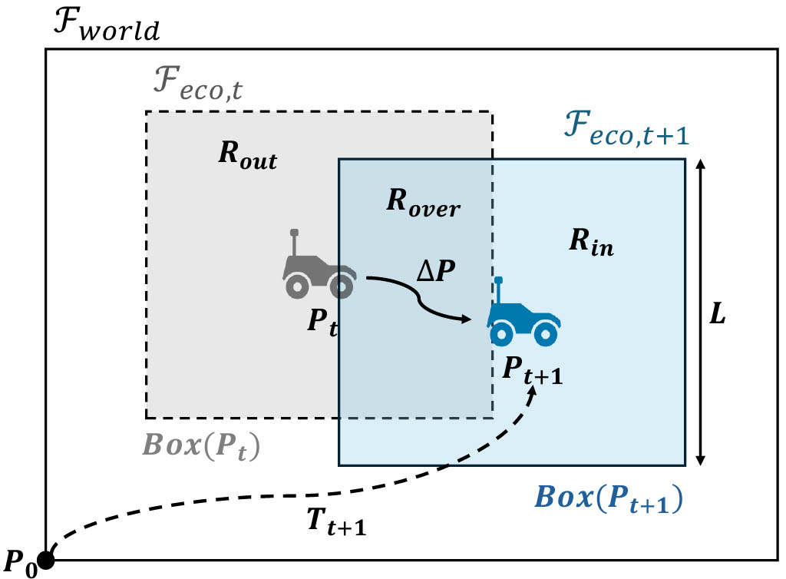
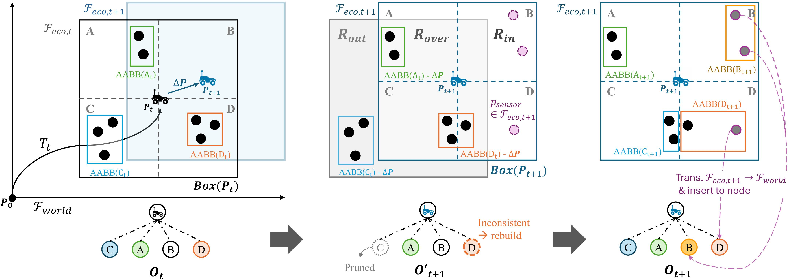
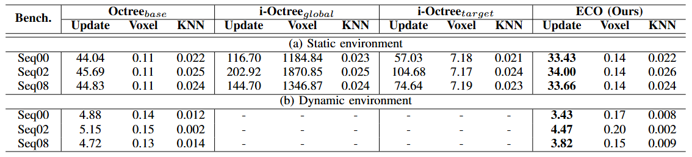
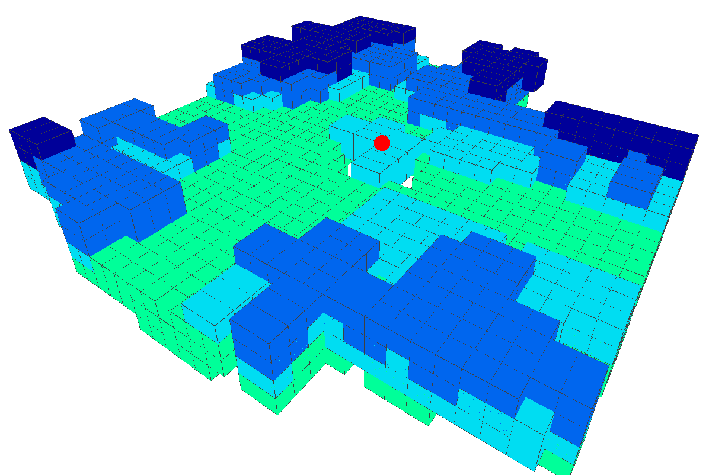
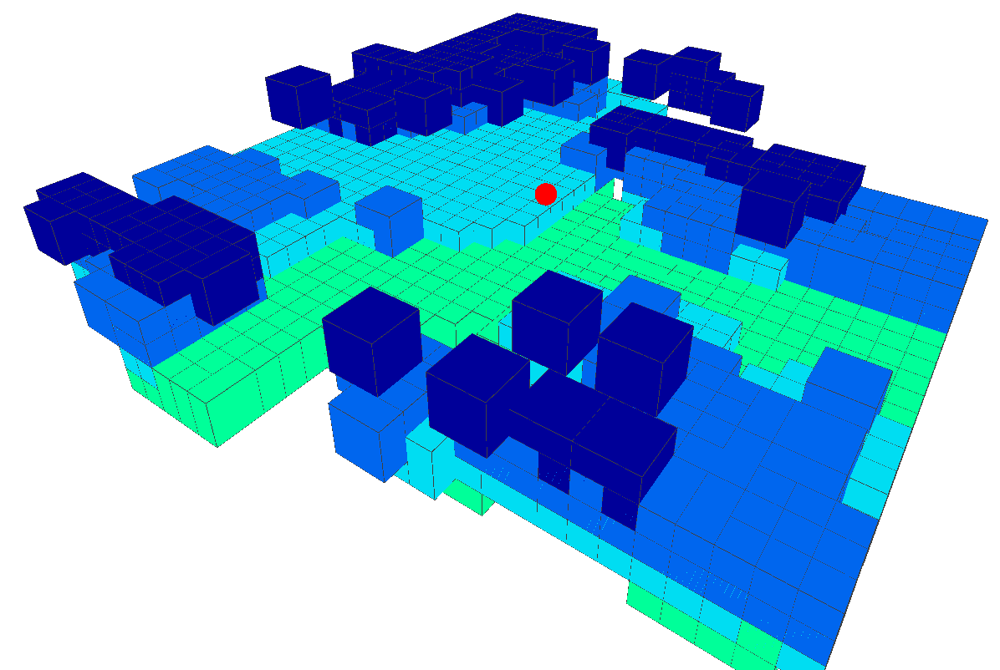
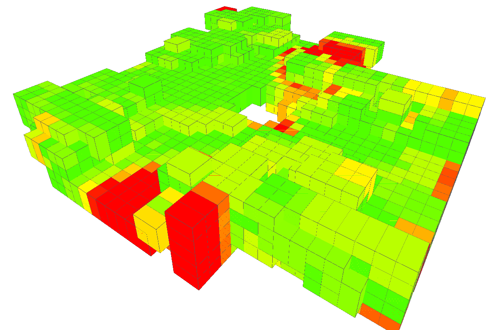

ECO: Incremental Ego-Centric Octree Update for Point Streams
Abstract
Constructing octrees for mobile robots that process continuous point streams in real time poses significant computational and memory challenges. Standard global structures often suffer from high latency and unbalanced tree growth. We introduce the Ego-Centric Octree (ECO), a spatial data structure that acts as a 3D sliding window, dynamically bounding the mapping space to the robot's immediate surroundings. ECO uses an efficient incremental update algorithm that categorizes the environment into shift-out, shift-in, and overlap regions, eliminating redundant global coordinate transformations.
Evaluations on the KITTI benchmark demonstrate that ECO reduces update times by up to 25.60% (24.87% on average) compared to full static reconstruction and by up to 67.52% (54.60% on average) compared to a bounded incremental baseline. Furthermore, ECO substantially lowers the total system latency of downstream tasks, running up to 34.17% faster than full reconstruction in voxel-map generation. In dynamic scenes, ECO naturally retains a short-term temporal memory of moving objects, providing useful temporal context while keeping update cost bounded and the tree balanced for real-time spatial perception.
Key Contributions
25.60%
faster update than full static reconstruction
(24.87% on average)
67.52%
faster update than bounded incremental baseline (i-Octreetarget)
(54.60% on average)
34.17%
lower total system latency for voxel-map generation
1.42×
speedup in dynamic scenes with short-term temporal memory of moving objects
- Ego-Centric Octree (ECO): A bounded 3D sliding window anchored to the robot's current pose, focusing computation and memory on the most relevant local space.
- Incremental update algorithm: Categorizes each frame's motion into shift-out, shift-in, and overlap regions to eliminate redundant global coordinate transformations.
- Bounded and balanced tree: Average tree depth of only 5 for ECO vs. 12 for i-Octreetarget, guaranteeing shallow O(log N) queries even after thousands of updates.
- Temporal memory for dynamic scenes: Naturally retains short-term historical trails of moving objects, providing valuable context for downstream tasks such as velocity estimation and predictive obstacle avoidance.
Problem Formulation

Notation and problem setup for maintaining the Ego-Centric Octree (ECO) as a 3D sliding window centered on the robot's current pose Pt.
Method Overview

Overview of the incremental ECO update algorithm, showing the shift-out (Rout), shift-in (Rin), and overlap (Rover) regions as the robot moves from Pt to Pt+1.
Quantitative Results
Update Time Progression on KITTI
ECO maintains a stable, bounded per-frame update cost across the entire trajectory, while the bounded incremental baseline i-Octreetarget degrades as the robot moves farther from the origin due to its unbalanced tree structure. The static baseline Octreebase is stable but incurs the highest full-reconstruction cost.

Update-time progression over consecutive frames on KITTI Sequences 00, 02, and 08 (static benchmark).
Average Computational Time per Timestep (ms)
Across all evaluated methods, ECO delivers the lowest average update time and, together with the low voxelization query time, achieves the lowest total system latency for downstream applications.
| Benchmark | Octreebase | i-Octreeglobal | i-Octreetarget | ECO (Ours) | ||||||||
|---|---|---|---|---|---|---|---|---|---|---|---|---|
| Update | Voxel | KNN | Update | Voxel | KNN | Update | Voxel | KNN | Update | Voxel | KNN | |
| (a) Static environment | ||||||||||||
| Seq00 | 44.04 | 0.11 | 0.022 | 116.70 | 1184.84 | 0.023 | 57.03 | 7.18 | 0.021 | 33.43 | 0.14 | 0.022 |
| Seq02 | 45.69 | 0.11 | 0.025 | 202.92 | 1870.85 | 0.025 | 104.68 | 7.17 | 0.024 | 34.00 | 0.14 | 0.026 |
| Seq08 | 44.83 | 0.11 | 0.024 | 144.70 | 1346.87 | 0.024 | 74.64 | 7.19 | 0.023 | 33.66 | 0.14 | 0.024 |
| (b) Dynamic environment | ||||||||||||
| Seq00 | 4.88 | 0.14 | 0.012 | — | — | — | — | — | — | 3.43 | 0.17 | 0.008 |
| Seq02 | 5.15 | 0.15 | 0.002 | — | — | — | — | — | — | 4.47 | 0.20 | 0.002 |
| Seq08 | 4.72 | 0.13 | 0.014 | — | — | — | — | — | — | 3.82 | 0.15 | 0.009 |
Update / Voxel / KNN denote octree update time, voxelization time, and KNN query time, respectively. — indicates that the corresponding baseline was not evaluated in dynamic environments due to structural limitations of global incremental trees.
Qualitative Results
Voxel maps generated in a dynamic scene (frame 104 of KITTI Seq00). ECO's map closely matches the full-rebuild baseline while additionally accumulating short-term trails of moving objects — a useful temporal memory for downstream dynamic robotic tasks.

(a) Octreebase
Full reconstruction (ground truth)

(b) ECO (Ours)
Incremental with temporal memory

(c) Error visualization
Chamfer distance ≈ 1.07 m avg.
ECO's error profile is identical to the standard i-Octree baseline, validating its correctness as an incremental mapping framework. The deviation from the instantaneous full rebuild reflects the accumulation of historical trails of moving objects, not a structural flaw.
BibTeX
@article{yu2026eco,
title = {ECO: Incremental Ego-Centric Octree Update for Point Streams},
author = {Yu, Jaemin and Jeong, Seongyoon and Chon, Kang-Wook and Kim, Duksu},
journal = {arXiv preprint arXiv:2607.05092},
year = {2026}
}